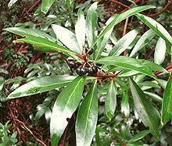

SAFARI
Users
Piperales - Order
 The order Piperales contains five families, but only two,
the Pepper family (Piperaceae) and the Lizard Tail family
(Saururaceae) provide anything of culinary interest, so those
are the only ones we will cover here. The
Pepper Order has it's own page.
The order Piperales contains five families, but only two,
the Pepper family (Piperaceae) and the Lizard Tail family
(Saururaceae) provide anything of culinary interest, so those
are the only ones we will cover here. The
Pepper Order has it's own page.
Laurales - Order
The order Laurales contains seven families, but only one, the Laurel Family provides much of culinary interest, so we are lumping family Gomortegaceae, which has only one species, in with the Laurels. The Laurel Family has it's own page.
Magnoliales - Order
This order contains six families. We have split two families out into separate pages because the culinary usage is so different from each other.
Magnolia & Tulip Tree[Genus Magnolia | Genus Liriodendron (Tulip Trees) - both of Family Magnoliaceae]
Formerly giving the name Magnoliophyta to all the flowering plants
(recently renamed to Angiosperms), Magnolias are a very ancient
line. All the flowering plants we depend on for food and flavorings are
thought to descend from a primitive Magnolia, but the Magnolia itself
is noted mainly for popular decorative flowering trees. Some also provide
high quality wood, and medicinals, but culinary usage is local.
Details and Cooking.
Custard Apple Family[Annonaceae]
This family includes a number of important tropical fruits native to
North, Central and South America, though some are now grown in
Southeast Asia. The
Custard Apple Family has it's own page.
Nutmeg Family[Myristicaceae] The Nutmeg Family has over 440 species in about 20 genera, but our listing is not large. I'm sure there are many more species with culinary value, but my primary information comes from botanists, who could care less about culinary or any other uses - they're interested in identification and naming. We include on this page also the family Eupomatiaceae, a
family of only four known species, only one of which has culinary
value.
Drawing of Nutmeg plant by Franz Eugen Köhler
from Köhler's Medizinal-Pflanzen, copyright expired. The
Nutmeg Family has it's own page.
Bolwarra[Native Guava, Copper Laurel; Eupomatia laurina of family Eupomatiaceae]
These large shrubs are native to Eastern Australia and New Guinea,
living in rainforests or humid eucalyptus forests. They produce
urn shaped yellow fruit about 0.8 inches in diameter. The fruit
contains an edible jelly with many edible seeds, similar in effect
to guavas, thus one of its names. The fruit has a strong spicy
flavor, so is most often combined with other fruits to make jams,
deserts and beverages. These shrubs are cultivated on a small scale
for their fruits.
Drawing by William Jackson Hooker, copyright expired
.
|
Canellales - Order
This Order contains only two families, Canellaceae and Winteraceae. Both provide spicy seasonings and both are of considerable medicinal interest. Winteraceae are southern hemisphere plants that are part of the "Antarctic Flora" from when Antarctica was warm and before the continents broke apart.
White Cinnamon [Cinnamon bark, Wild cinnamon; Canella winterana of family
Canellaceae]
[Cinnamon bark, Wild cinnamon; Canella winterana of family
Canellaceae]
This tree is native to the Caribbean region from the Florida Keys to
Barbados. Its aromatic bark is used in the same way as Old World
Cinnamon. Commercial production of White Cinnamon has ended, but
local production continues. This tree is also a popular decorative
in the region.
Photo by Pancrat distributed under license
Creative Commons
Attribution 3.0 Unported..
Pepper-bark Tree | Ugandan Greenheart[Pepper-bark: Peperbasboom (Afrikaans); Molaka (Sotho); Mulanga (Venda); Isibaha (Zulu); Warburgia salutaris | also Ugandan Greenheart; Warburgia ugandensis; both of family Canellaceae] Both these Trees are native to Subsaharan Africa, with the Pepper-bark more widely spread. The leaves of both have been used to provide a sharp peppery flavor to food and teas. The Greenheart was particularly used by Indian immigrants building railroads in Kenya to add sharpness to their curries until chili plants became widely available there. While they are very hot, the flavor is somewhat different from chilis. Extracts from the bark of both trees have shown antimalarial,
antifungal, and antibacterial properties and have long been used
as medicinals in the region, to the point of being over harvested.
Photo of W. salutaris by JMK distributed under license
Creative Commons
Attribution 3.0 Unported..
Horopito[Mountain Horopito, Pepperwood; Pseudowintera colorata of family Winteraceae]
This tree is native to New Zealand. It has primitive characteristics
indicating it is one of the earliest flowering plants. The spicy hot
leaves of this tree have become a common spice in New Zealand, usually
dried and powdered, and used similarly to black pepper. It has long
been used as a medicinal, both by the native Maori and European
Settlers. Photo by Peganum distributed under license
Creative Commons
Attribution-ShareAlike 2.0 Unported.
Tasmanian Peppercorns [Mountain Pepper; Tasmannia lanceolata | also Dorrigo Pepper; Tasmannia stipitata - both of family Winteraceae]
Native to Australia, these "peppercorns" look much like dried black
peppercorns but have a pungency and numbing effect on the tongue
similar to Sichuan peppercorns. Both dried berries and dried leaves
carry the spiciness and both are used in cooking, usually dried and
powdered. This plant is grown commercially in Australia and some is
exported to Japan to be used to flavor wasabe paste (whether real
wasabe or the horseradish paste also called "wasabe" I do not know).
Both leaves and berries also show strong antimicrobial activity and
are high in antioxidants.
Photo by Melburnian distributed under license Creative
Commons
Attribution 3.0 Unported..
|